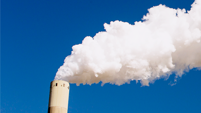
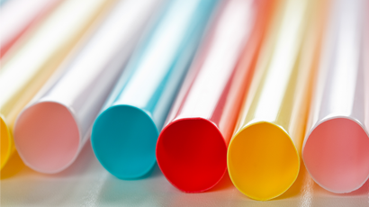
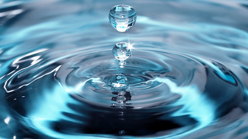

전 세계 야생동물 개체군 1970년 이후 평균 69% 감소
지구생명보고서 2022 발간소식
다양한 동물 종이 사라진다는 건 우리의 '지구'를 잃는다는 것 작은 실천부터 함께 시작해요.
WWF와 함께하는 플로킹런 참가하기
IN WHICH PEOPLE LIVE IN HARMONY WITH NATURE
WWF와 함께 만드는사람과 자연이 조화로운 미래
WWF와 함께 지구를 위해 할 수 있는 실천 방법은 많이 있습니다.
26 Oct 2022
특히, 전체 생산되는 식량의 약 40%는 단 한 번도먹지 않은 상태로 버려지고 있습니다.

13 Oct 2022
이를 하나의 국가로 본다면, 세계에서 5번째로 큰 온실가스 배출원이 될 것입니다.

15 Sep 2022
이는 한 사람이 900일 동안 식수로 마실 수 있는양입니다.
